Project 4 - Face Morphing
By Ankit Mathur
Face Morphing
In order to morph a face to another, we first need to annotate each face with correspondences that we are able to define manually through our existing knowledge about humans. These annotations provide the algorithm with a set of correspondences between different feature elements on the faces of these individuals. The first thing to do is to define a function that is able to warp the shape of the correspondences into one "average" shape. In fact, this does not always have to be an average - it can just be a weighted average of the two images that one is trying to morph. This allows for the shape warping to be more influenced by one face's shape than the other.
Once we have an average shape, we transform this set of points into a triangulation using the Delaunay algorithm.
Now, to generate the mean face, we need to do an inverse mapping from points in both images to points in the space of the average shape. This allows us to create an image that maps to the weighted average shape that we have computed. Starting with an zeros matrix, we now have to fill up the matrix with pixel values. To do this, in order to compute the inverse mapping, we need to find matrices that map pixels in the triangles of the original images to their corresponding points in the triangles of the average shape.
We model these transformations as affine transformations. To compute the inverse mapping, if points in the average triangles are P' and the points in the morphed images are P, then we have AP' = P, so A = PP'^{-1}.
The value of the pixel in the morphed image is then a weighted average of the two images.
- 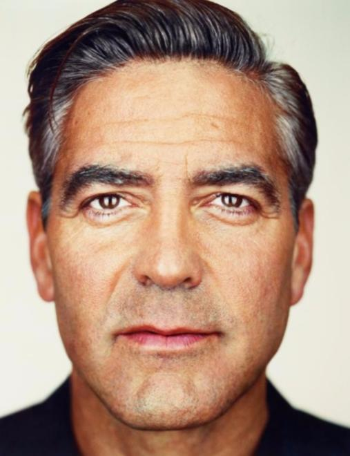
- 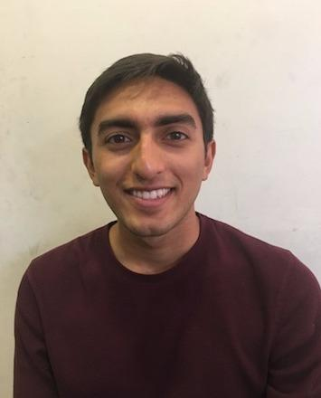
- 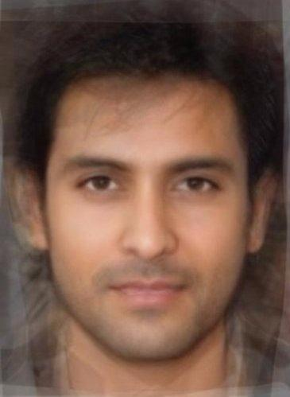
Average Face Dataset
Part 2 was an exploration of a larger dataset of faces, and for this, I used the dataset of Brazilian faces. I separated this dataset by gender, and the dataset came with a set of correspondences that were mapped across all the different faces in the dataset.
The process of computing the average shape of the dataset simply involves computing the average of the annotated points that are given to us. This provides the average mesh of the faces. The process of computing the average face is then very similar to the morphing process. A set of affine transformations for every triangle must be computed for every image. Then, the weighting of each image on the pixels in the morphed image is assigned to be even. Following the same Delaunay triangle process described in part 1, we are able to arrive at the mean face.
Finally, we can use this to compute morphs from members in the population to the average shape (and also other images, like yourself, to the average shape).
Mean face of the population (as computed using the method in the description):
I also selected a few of the members of the Brazilian population and morphed their faces to match the shape of the average face in the Brazilian male population:
Original:
- 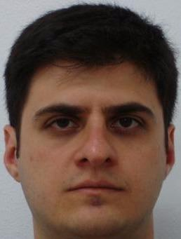
- 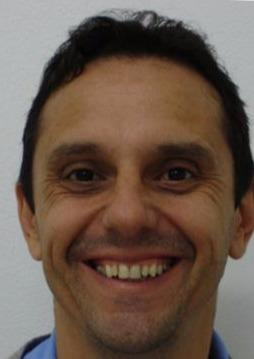
- 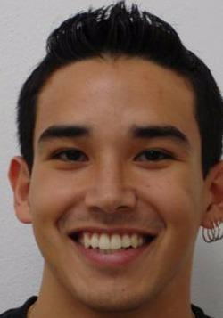
Morphed:
- 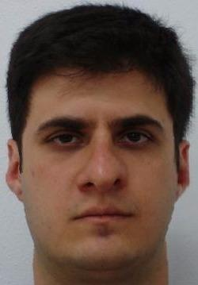
- 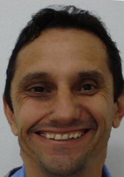
- 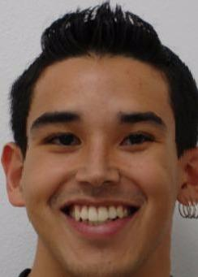
Notice how the faces in the morphed versions are skewed in the direction of the shape that the average face provided. The average face was both long and a little bit wider. In particular, the second subject here was skewed outward to match this constraint.
In addition to this, I computed my face mapped to the structure of the mean face, along with the mean face mapped to the structure of my own face:
Originals:
- 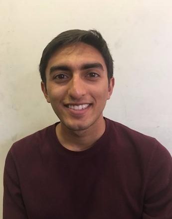
- 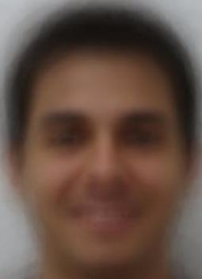
Morphed to Each Other's Shape:
- 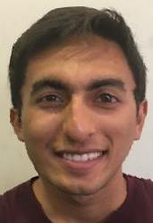
Caricatures
To compute a caricature, we find the difference between the average image and my face's correspondence points. Then, this difference is subtracted from the points on the mean face. That creates a caricatured structure for the mean face. Then, we morph our own face to the caricatured structure that we have from the points in the mean face. We keep only color from our own image, and we keep some fractional amount of caricatured structure to determine how much of the caricature we want.
I caricatured myself with the average face of a Bollywood actor. As you can see, this emphasized my differences from the average actor: my nose is larger and twisted, and my face has expanded
- 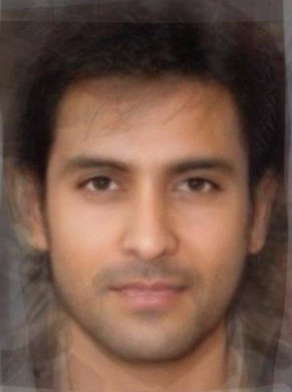
- 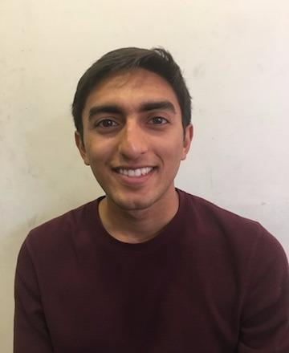
- 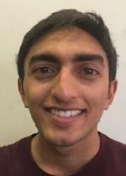
Bells and Whistles: Changing Gender
In order to change gender, I had to find the average face of a female population. Then, I had to morph myself into them by defining correspondence points on both my image and the image of the women. I did this by using the average face of a Bollywood actress.
- 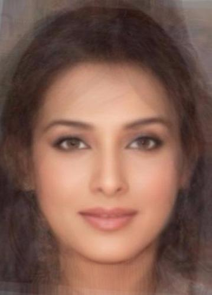
- 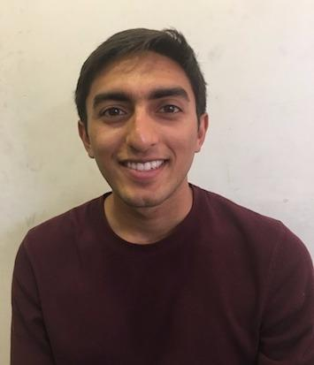
Here, in order, we have the image of myself morphed to the shape of the womens' average faces, the image of the women morphed into the shape of me, and finally, an even blending between the two:
- 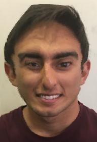
- 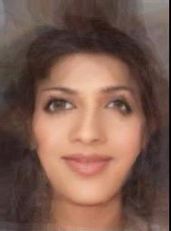
- 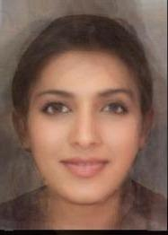